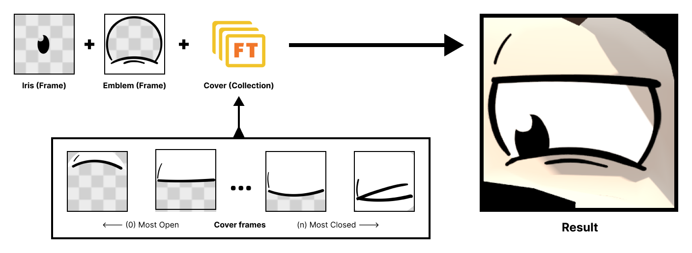
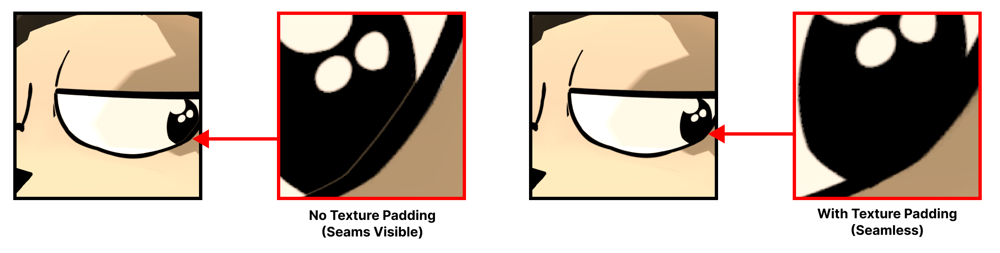
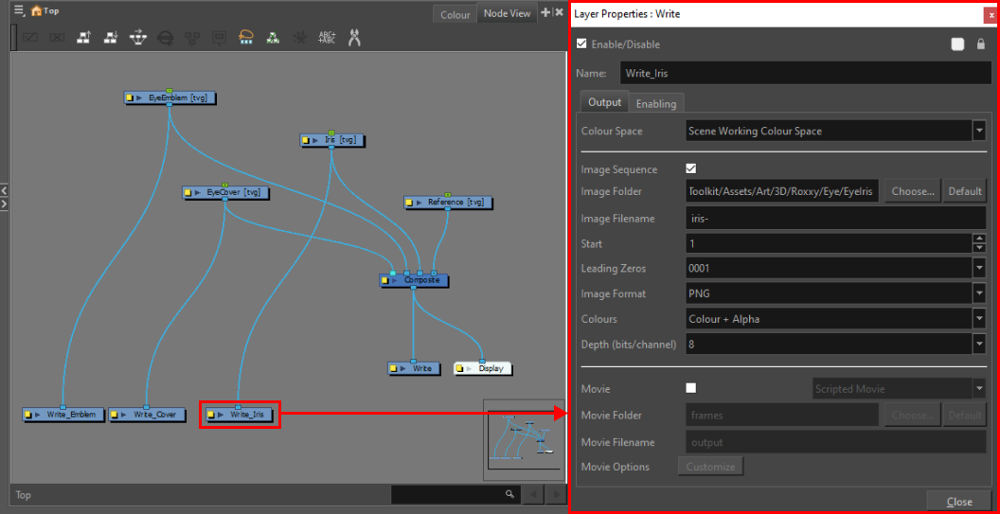

Authoring Textures
Eye Rig
The standard FaceToon eye rig consists of three main layers:
Iris (Inner Eye):
The iris is the inner part of the eye. It can be as simple as a center dot with transparency (in which case, the background uses a solid color defined in the shader) or a full eye (in which case, the background uses the color from the texture).Emblem (Eye Surroundings):
This layer contains the skin and other features surrounding the eye. It overlays the iris and should leave transparent areas where the eye (color and iris) needs to remain visible.Cover (Eyelids & Accessories):
The cover layer is rendered on top of everything. It is primarily used for eyelids and accessories (like glasses), ensuring they stay visible above the eyes at all times.Reusability: If you plan to reuse eyelids or accessories across multiple characters, consider storing them as separate textures, atlases, sheets, or geometry. This reduces the number of unique EyeCover textures required, though this is less of a concern if each character has its own set.

It is recommended to create textures in RGBA format with 1:1 aspect ratio (square resolution such as 512x512 (recommended), 256x256, 2048x2048 etc.).
When creating textures for collections, ensure they share the same resolution and format. This way they can be efficiently baked together to be used in the FaceToons TextureArray.
Recommended Practices: Dilation / edge padding
Some vector and image editors (e.g., Toon Boom Harmony, Illustrator, Photoshop) save alpha channels undilated. Compressing or mipmapping these textures can introduce unwanted (often white or black) seams between layers. This a common issue in videogames, since textures need to be compressed/aliased/mipmapped which leads to precision loss on the alpha channel, causing seams.

Solution
- To prevent this, allow the texture color to dilate (expand) into transparent areas. This eliminates seams and ensures smooth transitions between iris, emblem, and cover layers.
- Its not practical to create dillation manually as its likely you are going create new textures or author existing ones anytime in production. Most of major image editing applications (photoshop, photopea, krita, gimp etc.) have scripts which can do this for you automatically.
- If you are working with retro characters where sharp (non-aliased textures) aren't an issue, you may try changing the texture's Filter Mode to Point which prevents blurring the color and alpha channels.
Automation with Toon Boom Harmony
If you're using Toon Boom Harmony Premium as part of your drawing workflow, this guide will help you set up and export eye animations for use in FaceToons.
Note: This guide requires Harmony’s Node View.
Setup Steps
Create a New Project: Set up a new project in Toon Boom with the following layers:
- Eye Cover
- Iris
- Eye Emblem
- Reference: Optional, for aligning the character's eye and seeing drawings in context.
Prepare the Reference Layer:
- Paste an image of your character onto the Reference layer.
- Align the right eye (from our perspective) to fill the camera area.
- Lock the layer and set its transparency low for ease of drawing over it.
Open Node View:
- Open Node View and replicate the setup shown below:

Configure Write Nodes:
- Select the Write_Iris node and match the following settings:
- Image Format: Set to PNG.
- Colours: Choose COLOR + ALPHA.
- Image Folder: Set it to somewhere in your project’s
Assets/directory.
- Repeat this setup for
Write_EmblemandWrite_Covernodes.
- Select the Write_Iris node and match the following settings:
Draw Iris, Emblem, and Cover Textures:
- Draw on the Iris, Emblem, and Cover layers.
- Each frame in Toon Boom corresponds to a variation of the eye.
- For the Eye Cover layer, draw the most open eyelid position on the first frame, gradually closing it in subsequent frames.
Tip: Use the Show/Solo function to view individual layers while drawing or reviewing.
Export Frames for FaceToons:
- When ready to export, go to File > Export > Render Write Nodes.
- This will export each frame of your animation, generating separate texture files for FaceToons, ready to use.
Have you made changes after exporting? No problem, you can re-export again to update all the FaceToon Frames. You may however need to rebake the Collection's TextureArray.
Mouth Rig
FaceToons Mouth requires at minimum a set of 6 Mouth Shape textures to work with lip-sync tools. 9 Mouth Shapes are recommended. Mouth shapes texture guides are available in the Mouth Shapes section of the documentation.
Regular Mouth
There are no restrictions on mouth formats. Having Alpha channel is prefered as mouths can be reused between characters.
Multi-Angle mouths
Multi-angle mouths needs 2 textures per MouthShape or Expression. One is front (same as Regular Mouth) and other is when the mouth is viewed from the side (right).
The right-side texture is mirrored at runtime.
Tips
Same automation workflow as described in Automation with Toon Boom Harmony can be applied here.
Next Steps
For textures to be used they need to be referenced by Frames. This is covered in Creating Frames/Collections.